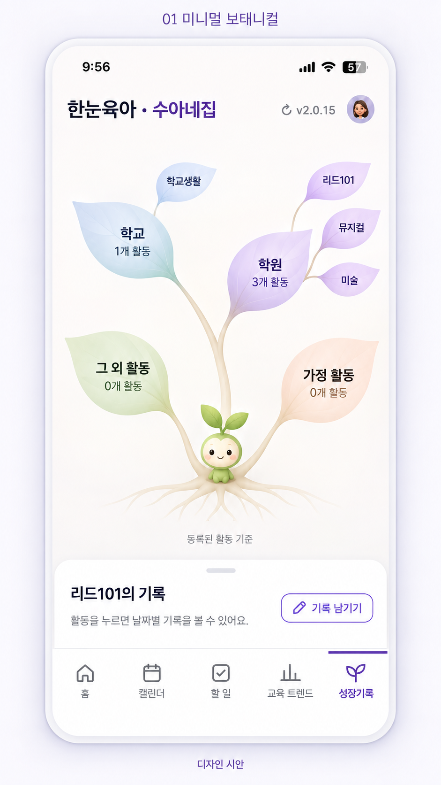
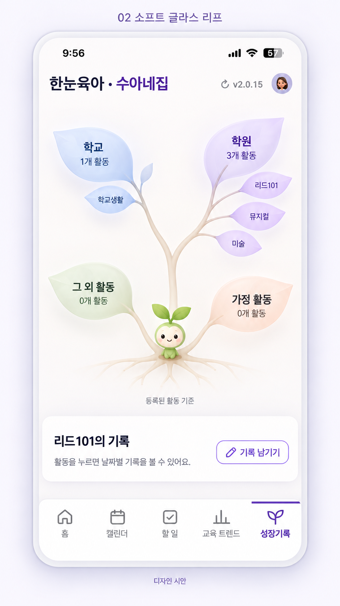
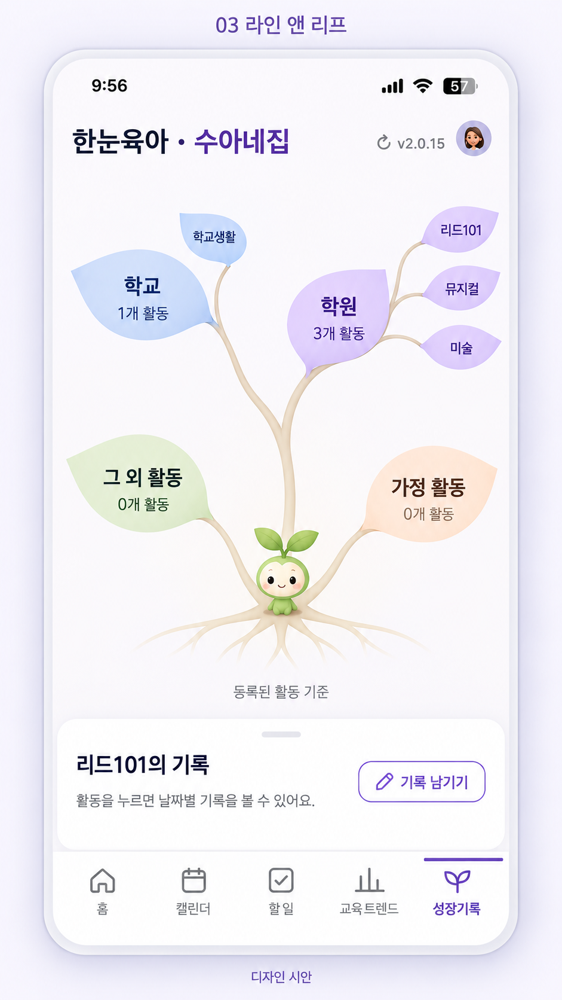
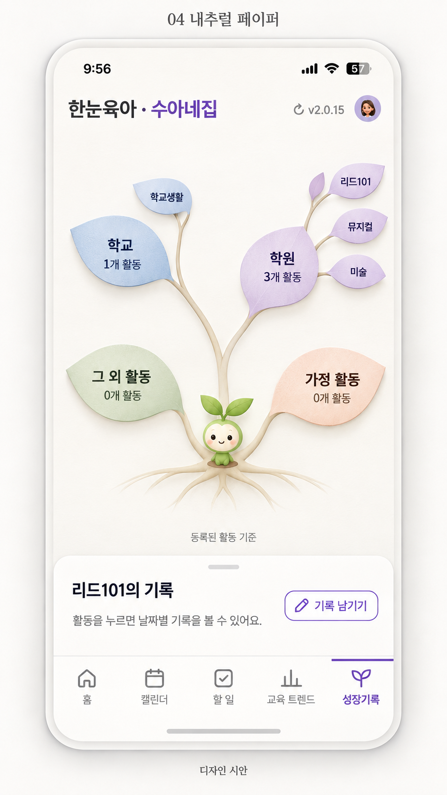
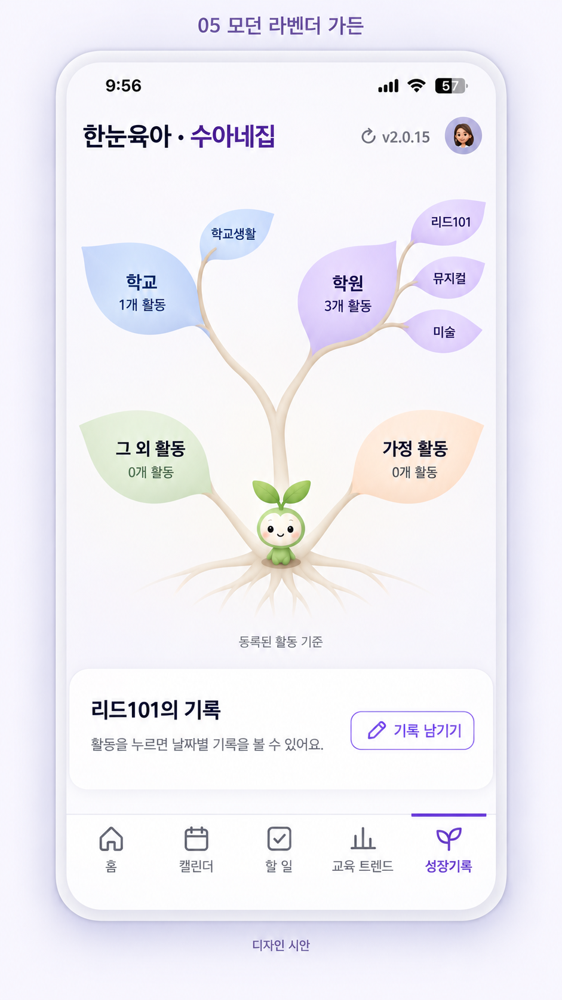

01 미니멀 보태니컬

가느다란 가지와 담백한 무광 잎
새싹 아이 → 큰 카테고리 잎 → 작은 활동 잎. 활동이 없으면 서브잎도 없습니다.

가느다란 가지와 담백한 무광 잎

절제된 반투명 잎과 은은한 깊이

얇은 선과 단순한 잎으로 가장 명료하게

따뜻한 종이 질감과 차분한 잎

현재 앱 톤에 맞춘 정돈된 잎 구조
방향 비교를 위한 이미지 시안입니다. 첨부 화면의 기록 수(학교 1개·학원 3개)와 학원 이름을 디자인용 활동 분포 예시로 사용했습니다. 실제 활동 수와 기록 수는 구현 시 구분합니다. 실시간 데이터 화면은 아닙니다. 이미지를 누르면 크게 볼 수 있습니다.